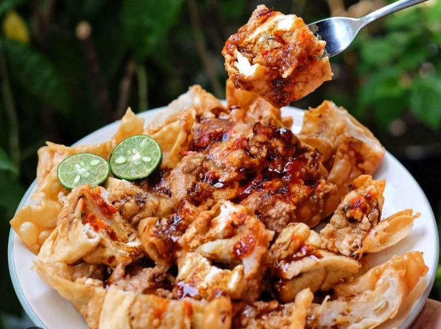

Makanan Khas Bandung
Berbagai makanan khas Bandung yang menjadi bagian dari kekayaan kuliner dan budaya Kota Bandung.
|
 BatagorBatagor adalah makanan khas Bandung yang merupakan singkatan dari "bakso tahu goreng". Batagor dibuat dari tahu dan adonan ikan kemudian digoreng hingga renyah. |
Seblak adalah makanan khas Bandung yang terkenal dengan rasa pedas dan gurih. Bahan utamanya adalah kerupuk yang direbus hingga lembut. |
Surabi adalah makanan tradisional Bandung yang terbuat dari tepung beras. Surabi memiliki tekstur lembut dan dapat disajikan dengan berbagai topping. |
|
Peuyeum adalah makanan khas Bandung yang dibuat dari singkong yang difermentasi menggunakan ragi. Rasanya manis dan sedikit asam. |
Cireng merupakan singkatan dari "aci digoreng". Makanan ini dibuat dari tepung tapioka yang digoreng hingga bagian luarnya renyah. |
Cuanki adalah makanan berkuah yang populer di Bandung. Biasanya berisi bakso, tahu, siomay, dan bahan lainnya. |